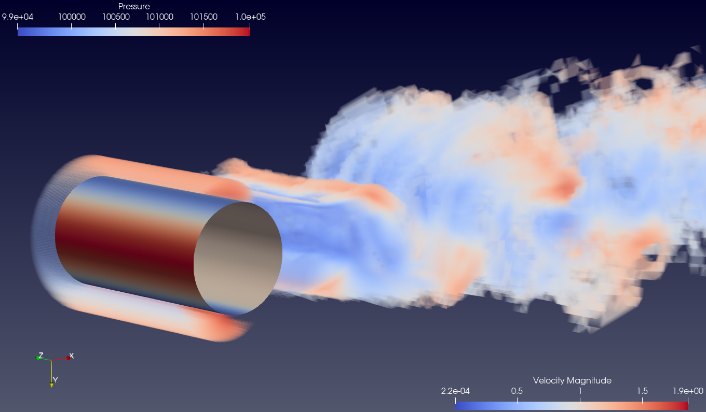

Thesis subject
Efficient aerodynamic and aeroacoustic simulation of rotating machines with hybrids turbulence models.
The goal of this thesis work is to make efficient aerodynamic and aeroacoustic simulations of rotating machines, such as helicopters, future aerial taxis, wind turbines, etc. , in order to give a precise answer to the difficult problem of efficient prediction of noise generating by mono- or multi-rotors rotating machines. The privileged turbulence models will be hybrid models, and the applicable numerical model for unstructured meshes will use a mixed finite element/finite volume formulation, in which the convective terms are discretized by high-order edge-based reconstruction schemes with a numerical dissipation that can be weighted. The resulting schemes are little dissipative and dispersive in order to simulate more accurately wave propagation. To take into account moving geometries, the immersed boundary method and/or the Chimera method will be implemented and evaluated. In the acoustic wave propagation context, the combination of the immersed boundary approach, or the Chimera method, with a hybrid turbulence model and moving geometries, gives an innovative character to this work. In order to perform the numerical simulations associated with this thesis work, the parallel CFD code AIRONUM, developed in collaboration with INRIA's team ECUADOR from Sophia-Antipolis, will be used.
Simulations of aerodynamic flows
Supercritical flow around a circular cylinder
This benchmark concerns the simulation of the flow around a circular cylinder in the supercritical regime, more precisely at Reynolds numbers 1 million and 2 million (based on the cylinder diameter). For such flows, hybrid models are to be preferred, offering a good compromise between cost and prediction accuracy. Some views of the computational domain are given in the Figure below. For each Reynolds number, the non-dimensional distance of the first grid nodes is y+=1 in the case of an integration to the wall, and about y+=30 in the case of a wall law computation. Adiabatic conditions are considered and the initial flow conditions are ρ0 = 1,225 kg.m-3, Vx0 = 34,025 m.s-1, Vy0 = Vz0 = 0 m.s-1 and p0 = 101300 Pa (leading to a Mach number of 0,1). The inlet turbulence intensity is set to 0.5 % , and in the case of an hybrid approach using a k-ε model, k can be set to 0.05 m2.s-2 and &epsilon to 0.18 m2.s-3 at time t=0 s. The quantities of interest are the bulk coefficients and the pressure distribution on the cylinder wall.
-

Figure: Hybrid RANS/DVMS 3D vorticity field using velocity color scale and pressure distribution on the body.
Figure: Hybrid RANS/DVMS 3D vorticity field using velocity color scale and pressure distribution on the body.
Flow around an extruded wing with profile NACA0021
The numerical simulation of the flow around an extruded wing with profile NACA0021 is considered in the proposed benchmark, with an emphasis on the airfoil self-noise generation and propagation. The Reynolds number is set to 0.27 million (based on the chord of the airfoil section) and the angle of attack is 60o. Hybrid turbulence models are good candidates for the simulation of such flows, offering a good compromise between cost and prediction accuracy. Some views of the computational domain are given in the Figure below. The non-dimensional distance of the first grid nodes is y+=0,7. The initial flow conditions are ρ0 = 1,225 kg.m-3, Vx0 = V0cos(α) m.s-1, Vy0 = V0sin(α) m.s-1, Vz0 = 0 m.s-1 and p0 = 101300 Pa, where V0 = 34,025 m.s-1 and α denotes the angle of attack (α = 60o). The inlet turbulence intensity is set to 0.6 %. The aerodynamic quantities of interest are the bulk coefficients and the pressure distribution on the wing surface, and the root-mean-square pressure fluctuations with regard to the acoustic aspects.
Figure: Hybrid RANS/DVMS 3D vorticity field using velocity color scale and pressure distribution on the body.
Publications
Technical report
We examine hybrid RANS-LES modeling for the study of flows around rotating
machines like helicopters and drones. Using a fine-mesh, the simulations should provide accurate
estimates concerning the noise emission. Each of these flows can involve mean and high Reynolds
turbulent regions with detached eddies and with thin laminar and turbulent boundary layers.
A hybrid model, like DDES, is then mandatory, with possibly an improved resolution of LES
regions, which are mainly turbulent wakes. It is then interesting to apply in these regions a
more sophisticated LES model than the LES part of DDES. In our study, we use the dynamic
variational multiscale model (DVMS). In the other regions, a DDES or simply a RANS modeling
is applied. In both cases a two-equation closure is chosen. After a discussion of the modeling
ingredients, we shall present a comparison of the RANS, LES, and hybrid models for two series
of flows. Although computed by many researchers, flows around cylinders remain difficult to
predict. The comparison will continue with a flow around a cross shaped mixing device rotating
inside a cylinder.
Florian Miralles, Bastien Sauvage, Stephen Wornom, Bruno Koobus, Alain Bernard Dervieux, Hybrid RANS/DVMS modeling for static and rotating obstacles, 2022
A review on immersed boundary (IB) methods is proposed in this document. This starts
from Peskin’s pioneering work on the application of the IB approach for the computation of
the flow around heart valves to recent works dealing with the computation of compressible
turbulent flows using continuous or discrete forcing IB techniques. Emphasis is
placed on work dealing with IB methods applied to viscous compressible flows.
Florian Miralles, Bruno Koobus, The immersed boundary approach. A review. 2021
Conference papers
The proposed communication deals with hybrid RANS-LES modeling. The target application is the study of flows around rotating machines like
helicopters and drones. In fine, the simulations should provide accurate estimates concerning the noise emission. Each of these flows can involve mean
and high Reynolds turbulent regions with detached eddies and with thin laminar and turbulent boundarylayers. A hybrid model, like DDES, is then mandatory, with possibly an improved resolution of LES regions, which are mainly turbulent wakes. It is then interesting to apply there a more sophisticated LES model than the LES part of DDES. In our study, we
use there the Dynamic variational multiscale model (DVMS). In the other regions, a DDES or simply a RANS modeling is applied. In both cases a twoequation closure is chosen. After a
discussion of the modeling ingredients, we shall present a comparison of the RANS, LES, and hybrid models for two series of flows. Although computed by many researchers, flows around
cylinders remain difficult to predict. The comparison will continue with a flow around a cross shaped mixing device rotating inside a cylinder.
F.Miralles, B.Sauvage, S.Wornom, B. Koobus, A. B. Dervieux, Application of hybrid RANS/VMS modeling to rotating machines, Conference on Modelling Fluid Flow, Budapest, Hungary, August 30-September 2, 2022
Several hybrid turbulence modellings are evaluated on the simulation of the flows around
a circular cylinder, over an airfoil in a deep stall, and around a cross shaped mixing device
rotating inside a cylinder, the target application being the flows around rotating machines such as helicopters and drones. These benchmarks, which contain many characteristics encountered in industrial flows, are challenging due to the complex physics of the flow
and the considered high Reynolds numbers. The first hybrid approach investigated in
this work is the classical Detached Eddy Simulation (DDES) model [1], the second one
blends a dynamic variational multiscale large eddy simulation (DVMS) model and a RANS
model (RANS/DVMS, [2]), and the third one combines the DDES model with the DVMS
model (DDES/DVMS, [3]). A smooth blending function, which is based on the value of
a blending parameter, is used for switching from RANS to DVMS in the RANS/DVMS
strategy. In the DDES/DVMS approach, the DVMS model is preferentially activated in
the wake in order to more accurately predict this region of the flow thanks to the low
dissipation introduced by this model. Results are compared to those of other RANS, LES
and hybrid simulations in the literature and with experimental data, and highlight the
overall good prediction capabilities of the proposed hybrid strategies for the simulation
of such massively separated flows and rotating machine flows.
F. Miralles, B. Sauvage, A. Duben, V. Bobkov, T.Kozubskaya, S.F. Wornom, B. Koobus, A. Dervieux, Simulation of massively separated flows ant rotating machine flows using hybrid models, ECCOMAS Congress 2022 5-9 June 2022, Oslo, Norway
The simulation of unsteady flows characterized by large separations induced by adverse pressure gradient is still a chal-
lenge at high Reynolds numbers. For such simulations, hybrid models are those favored due to the cost/accuracy compro-
mise they offer. In this study, we assess, next to the DDES approach, the performance of two hybrid models for the pre-
diction of the flow around a circular cylinder at Reynolds numbers 10 6 and 2 × 10 6 , and the flow over a NACA0021 airfoil in a deep stall at Reynolds number 270000. These hybrid
models combine either a RANS model or the DDES approach with the dynamic variational multiscale (DVMS) model for
the large eddy simulation. A mesh adaptation procedure is currently being applied for the NACA0021 benchmark, with
the aim of improving the prediction of the aerodynamic and aeroacoustic characteristics of the flow, such as the airfoil self-
noise generation and propagation.
F. Miralles, B. Sauvage, S. Wornom, B. Koobus and A. Dervieux, Simulation of massively separated flows using hybrid turbulence models and mesh adaptation, Direct and Large-Eddy Simulation 13, Itlay, 2022.
Communications
Conferences